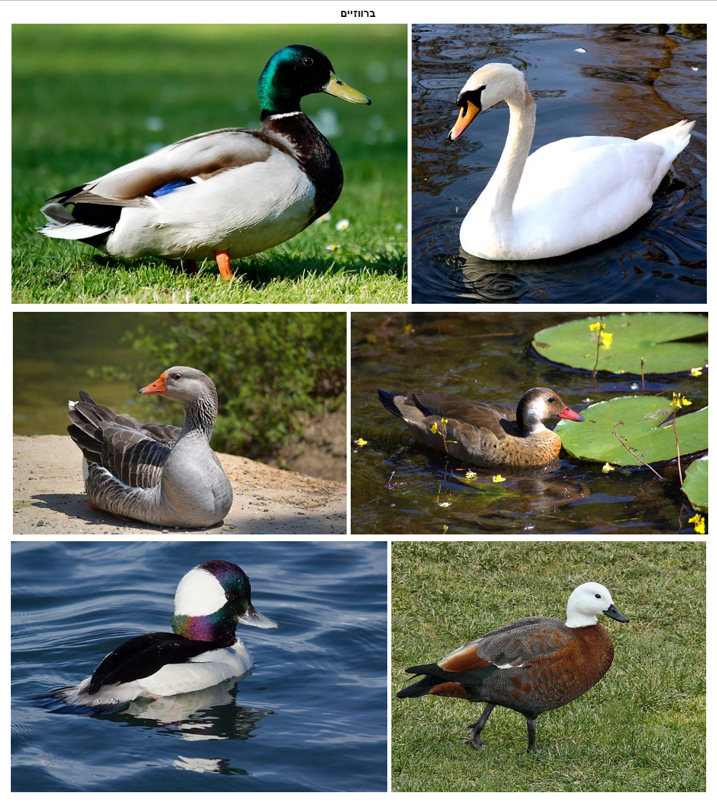

Essa é a tal familia dos patos
Ela inclui os patos, gansos e cisnes. É uma família de distribuição cosmopolita, ocorrendo em todos os continentes com exceção da Antartica. Essas aves são adaptadas a nadar e flutuar na superfície da água, em alguns casos ao mergulho em águas rasas.
